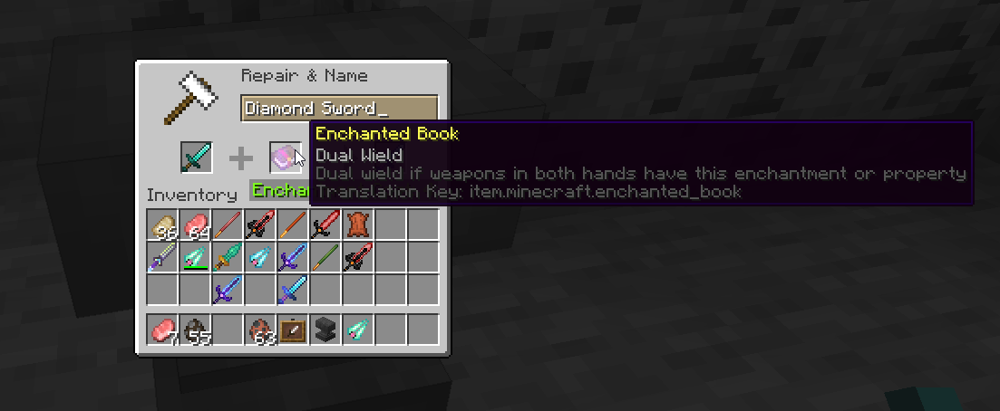

Projects Showcase
Below are some showcases for various projects I've worked on.
Mango Village
Example clip showcasing some game mechanics implemented.
Looks simple, but there's a lot going on in the background here!
- Multiplayer with a client/server architecture, using durian, my own library, as the networking layer. All the movement and physics is being calculated on the server and sent to the client for rendering.
- Physics system, powered by bevy_rapier, an impulse based physics simulator. The player is modeled as a character controller, with a custom collision system written by me. I have also looked into XBPD, but the current resources are still immature.
- Implemented my own Pan-orbit camera system with 3d controls, with a locked follow camera mode on the player
- Meshes are generated as .gltf/.glb files from Blender models
- All built on top of the Bevy game engine under an Entity Component System (ECS) architecture.
Blender donut
Rendered in Blender 3.6.1 LTS, following the classic
Blender Donut TutorialSpoorn Bounty Mobs
myLoot

Pixel art hand drawn in photoshop
Pink
Pixel art hand drawn in photoshop, inspired by my beautiful girlfriend and her favorite color.
Spoorn Weapon Attributes

Spoorn Armor Attributes

Climb Ladders Fast
Gotta go fast

See Through Water/Lava
For me to simulate having 20/20 vision
Dual Wield
Spoorn Loot
cue sailor moon soundtrack ੈ ✩ ‧ ₊ ˚ ˚ ༘ ♡ ⋆ ｡ ˚
media-to-ascii Examples
Ascii videos!?!???!?

And high quality ascii images of course